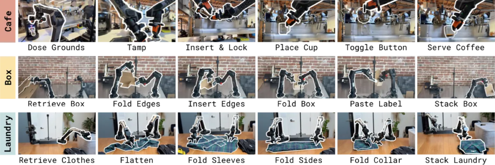
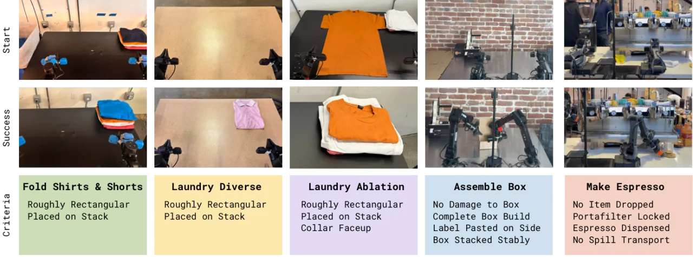
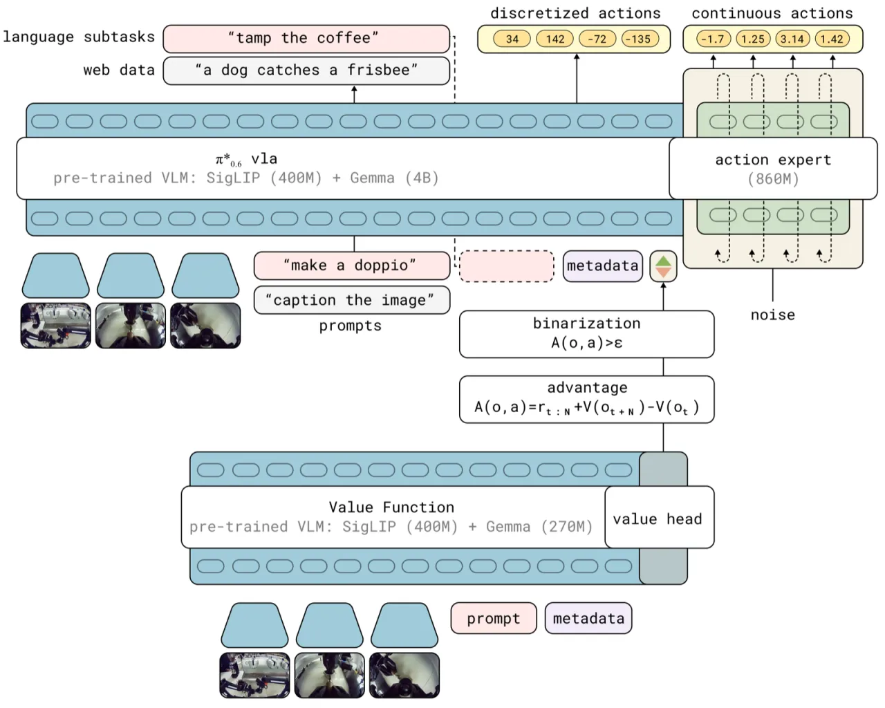
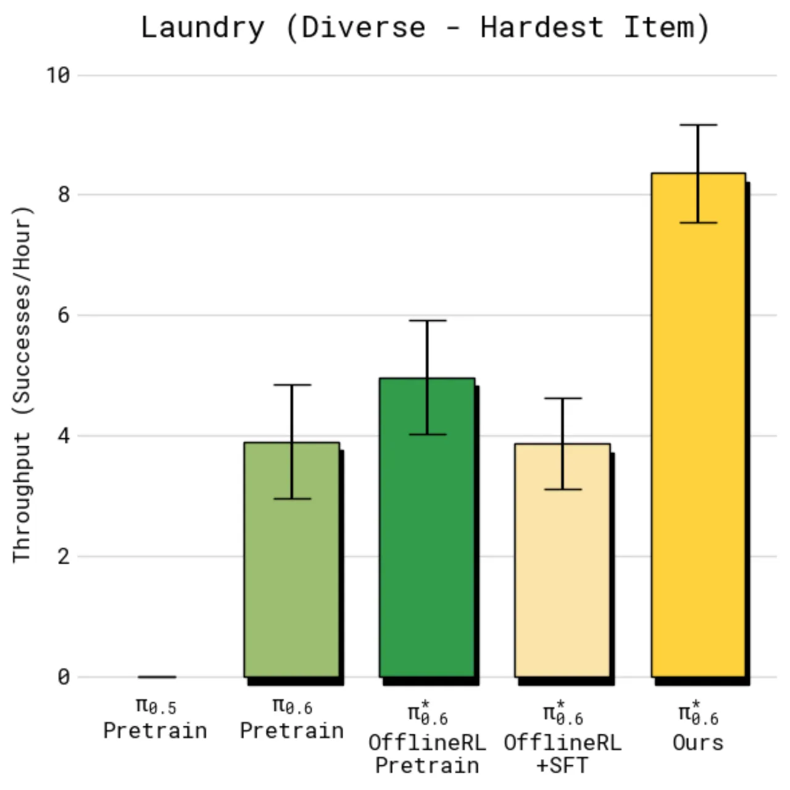
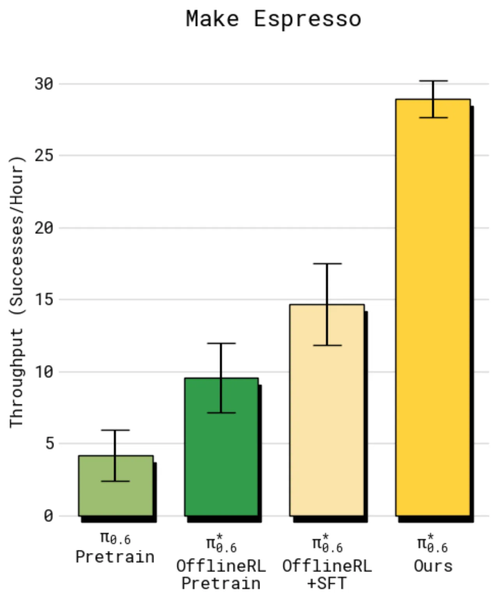
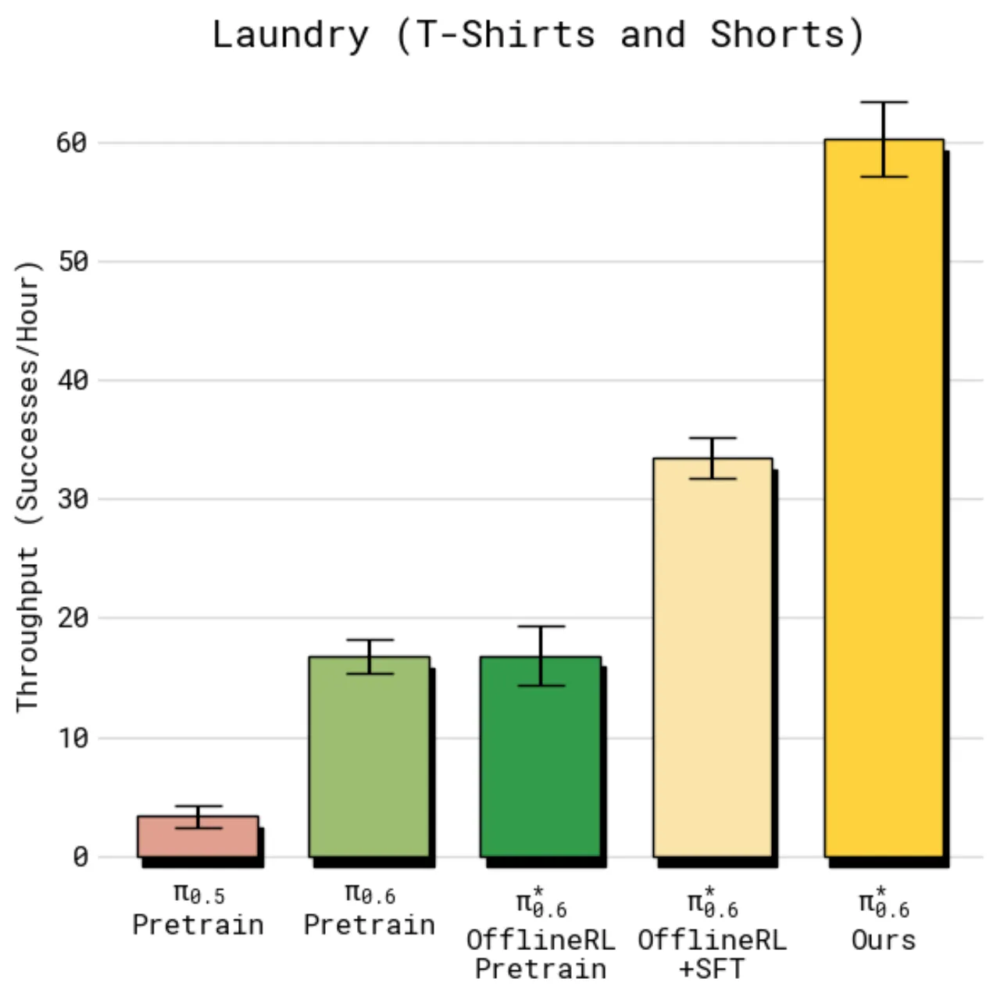
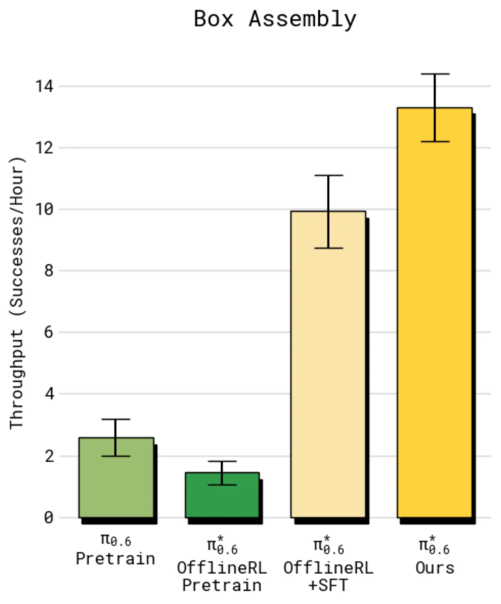

本文提出 Recap（Reinforcement Learning with Experience and Corrections via Advantage-conditioned Policies）， 一种让大型视觉-语言-动作（VLA）模型通过真实世界部署经验持续自我提升的强化学习框架。 在洗衣折叠、盒子组装和咖啡制作等家庭任务上，π*₀.₆ 实现了任务吞吐量翻倍、失败率减半的显著改进， 并完成了连续 13 小时无人监督自动制作浓缩咖啡的实际部署。
机器人基础模型能否像人类一样"熟能生巧"——通过实际操作积累经验来持续提升技能？ 现有 VLA 模型依赖大量人工示范进行模仿学习，但"示范数据永远无法覆盖真实环境的所有变化"， 导致模型在部署时仍会遭遇大量失败。如何高效地利用机器人自主采集的轨迹数据（包括失败、成功和人工干预）， 是迈向实用级机器人自主性的关键障碍。
"Practice makes perfect — humans need many attempts at complex tasks to achieve mastery… We need methods that can learn from autonomous experience, can correct actual deployment mistakes, and can improve speed beyond human teleoperation."


Recap 将异构数据（人工示范、自主采集轨迹、专家干预）统一纳入 VLA 的训练管线， 通过优势条件化策略（advantage-conditioned policy）实现策略提升—— 无需显式策略梯度，只需对成功动作与失败动作分别建模即可从经验中学习。

机器人自主执行任务，标注员在必要时远程干预并提供示范修正。干预轨迹的优势指示符强制置为 True， 为模型提供"改进性动作"样例。每次迭代采集约 300–600 条自主轨迹和 280–380 条干预轨迹。
训练一个分布式价值函数（distributional value function），以负剩余步数（归一化至 (-1,0)）为目标。 优化目标：最小化 H(RBt(τ), pφ(V|ot,ℓ))， 即预测分布与真实返回的交叉熵。任务阈值 εℓ 设为预训练阶段价值预测的第 30 百分位数。
改进策略遵循：π̂(a|o,ℓ) ∝ πref(a|o,ℓ) · (πref(a|I,o,ℓ) / πref(a|o,ℓ))β。 训练目标（Eq.3）为最小化 E[−log πθ(at|ot,ℓ) − α log πθ(at|It,ot,ℓ)]， 其中 It = 1(Aπref(ot,at,ℓ) > εℓ)。
在数万小时的多机器人数据上用 Recap 进行大规模离线 RL 预训练， 使 π*₀.₆ 获得广泛的"何时需要改进"先验知识，为下游任务特化提供更好的初始化。
针对具体部署任务，循环执行上述三步流程（通常 2 轮迭代）， 利用任务特定的成功/失败奖励信号逐步消除失败模式并提升操作速度。
任务奖励函数定义为：rt = 0（成功）、−Cfail（失败）、−1（每步惩罚）。 该稀疏奖励仅依赖人工标记的片段级成功/失败标签，无需设计复杂的密集奖励函数。
在 4 个真实机器人任务上对比 π*₀.₆（有/无 Recap）及多个基线方法， 主要指标为每小时成功完成任务数（throughput）和成功率（success rate）。
| 任务 | 基线 π₀.₆（无RL） | π*₀.₆ + Recap | 提升 |
|---|---|---|---|
| 洗衣折叠（T恤/短裤） | ~5.5 任务/时, ~90% | ~8.5 任务/时, ~95% | 吞吐量 +55% |
| 洗衣折叠（多样·最难物品） | ~3 任务/时, ~50% | ~7 任务/时, ~75% | >2× 吞吐量 |
| 制作浓缩咖啡 | ~2 任务/时, ~45% | ~5 任务/时, ~90% | >2× 吞吐量 |
| 盒子组装 | ~5 任务/时, ~75% | ~9.5 任务/时, ~90% | >2× 吞吐量 |




| 方法 | 类型 | 表现 |
|---|---|---|
| π₀.₅ | 上一代通用模型，无RL | 最低基线 |
| π₀.₆（SL baseline） | 监督学习，无优势条件化 | 中等 |
| Offline RL + SFT | 仅使用示范精调 | 略高于SL |
| AWR（优势加权回归） | 替代RL算法 | 低于Recap |
| PPO（策略梯度） | 在线RL | 显著低于Recap |
| π*₀.₆ + Recap（本文） | 离线优势条件化RL | 最优 |
消融实验验证了三个关键设计选择的必要性：
"Our system is not fully autonomous: it relies on human labeling and effort for reward feedback, interventions, and episode resets." ——系统并非完全自主，每轮迭代需要标注员提供片段级成功/失败标签，并在机器人卡死时进行重置或干预， 限制了大规模自动化部署的可行性。
"Our system is relatively naïve in how it approaches exploration." ——Recap 的探索依赖策略自身的随机性和人工干预来访问新状态，缺乏主动探索（active exploration） 机制，对于需要大幅偏离当前策略才能改进的任务可能效率较低。
"Recap performs iterated 'offline' updates rather than running a fully online RL loop." ——每次策略更新需要先收集一批数据再离线更新，而非实时在线强化学习， 导致样本效率低于理论最优的在线方法，且难以快速响应分布偏移。
推断（inferred）：目前评估任务数量有限（4个），且均在 Physical Intelligence 内部场景测试， 对更广泛的任务类别（如动态环境、多物体复杂操作）的泛化能力尚未系统验证。 此外，预训练阶段需要"数万小时"多机器人数据，数据获取成本对外部研究者构成较大门槛。